3. МОДЕЛИРОВАНИЕ СХЕМ ИССЛЕДУЕМЫХ ЦЕПЕЙ
Для исследования динамических свойств цепей (звеньев) рекомендуется собрать на рабочем поле программы EWB обобщенную схему цепи (рис. 17.3) (или открыть файл Lr17.ewb).
Примечание. При выполнении работы в среде MS8SD открыть файл Circuit\Lr17.ms8.
С помощью контактов, управляемых клавишами S, D и F, можно замкнуть накоротко соответственно элементы R1, L1 и C1 первой ветви, а с помощью контактов, управляемых клавишами Q, W и T, можно отключить (включить в схему) элементы R2, L2 и C2 второй ветви.
Таблица 17.2
Изображение функции F(p) |
Оригинал f(t) | |
1 |
1/p |
f(t) |
2 |
1 |
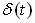 |
3 |
U1 /p |
U1 |
4 |
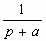 |
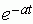 |
5 |
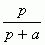 |
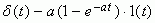 |
6 |
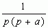 |
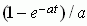 |
7 |
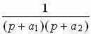 |
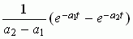 |
8 |
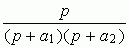 |
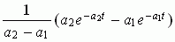 |
9 |
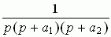 |
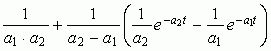 |
10 |
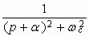 |
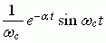 |
11 |
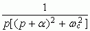 |
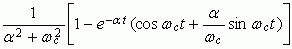 |
12 |
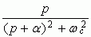 |
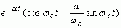 |

Схема подключается к источнику постоянного напряжения с ЭДС Е посредством управляемого временем контакта Р. Для моделирования входного воздействия 1(t) и получения реакции (переходной функции hu(t) цепи по напряжению) установить следующие параметры управляемого контакта Р: Time on = 11 ms (11 мс); Time off = 1 µs (1 мкс). После запуска программы EWB цепь подключается к источнику Е = 1 В через интервал Time off = 1 мкс на время t = 10 мс, которое достаточно для практического завершения свободных колебаний в цепи.
Для моделирования входного воздействия δ(t) и получения реакции (импульсной функции gu(t) цепи по напряжению) установить: ЭДС источника Е = 1 кВ; Time on = 11 μs (11 мкс); Time off = 1 μs (1 мкс) управляемого контакта Р. После запуска программы EWB (или программы MS8SD) цепь подключается к источнику напряжения с ЭДС Е через интервал Time off = 1 мкс на время tи = 10 мкс.
Примерный порядок параметров элементов цепи и настройки осциллографа приведены на рис. 17.3.
При моделировании переходных процессов в исследуемых цепях рекомендуется установить следующие опции программы EWB (MS8):
- Analysis Options\Transient\Transient Tolerance Factor = 0,05;
- Analysis Options\Instrument\Pause after each screen – установить;
\Points per cycle = 400;
\Generate time steps… = 500.